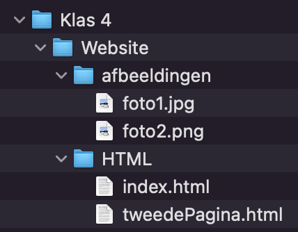

Nu we geleerd hebben hoe HTML bestanden en afbeeldingen toegevoegd kunnen worden aan onze website, wordt het tijd om ook te leren hoe we de mappen netjes kunnen houden. Natuurlijk zorg je er als eerste voor dat alles een goede naam heeft zodat we het makkelijk kunnen terug vinden, maar we kunnen ook mapjes gebruiken om het zoeken wat in te perken. Zo staat alles netjes bij elkaar in plaats van door elkaar heen!
 We hebben net gezien dat we de naam van de foto konden gebruiken om te verwijzen naar de foto die in het mapje stond van de website. Dit werkte omdat de foto en de website in de zelfde map stonden. Als je een mapje toevoegt, dan moet je tegen HTML vertellen hoe hij bij de foto of andere pagina kan komen. Stel we hebben de volgende mappen structuur, en we moeten de foto1.jpg toevoegen aan onze index.html
Als we kijken bij index.html, dan staat hij in het mapje HTML in het mapje Website. De afbeelding staat in het mapje afbeeldingen in het mapje Website. We hebben nu de eerste overeenkomende map gevonden. Namelijk, ze staan allebei ergens in de map van Website. Om dan van de index.html naar de foto1.jpg te gaan moeten we eerst het mapje van HTML uit, en daarna het mapje van afbeeldingen in. Dit doen we als volgt:
<img src="../afbeeldingen/foto1.jpg" alt="tekst die je zelf toevoegt">
We gebruiken dus .. om een mapje uit te gaan, en de naam
van de map om het mapje in te gaan. Tussen elke stap gebruiken we / om de volgende stap aan te geven.
Deze manier van een verbinding maken tussen twee bestanden heet een relatieve link.
De naam komt van het principe dat we vanaf we website kijken hoe we bij de foto komen,
in plaats van vanuit het aller eerste mapje wat jouw computer kent.
Het voordeel hiervan is dat we altijd zeker weten dat de relatieve link klopt. Zodra je namelijk een absolute link hebt zoals:
Gebruiker/tld/informatica/website/afbeeldingen/foto1.jpg
Dan moet je altijd tld heten op jouw computer, en dat zou toch wel lastig zijn.
Om een goede relatieve link te maken kun je het volgende stappen plan volgen:
.. elke keer als je een mapje uit gaat,
en de naam van het mapje als je een mapje in wilt.
Vergeet niet om een / te gebruiken tussen elke stap.Relatieve links werken niet alleen in de src van bijvoorbeeld de img tag, maar ook in de href van de a tag, en elke andere plek waar je een link maakt tussen twee bestanden.